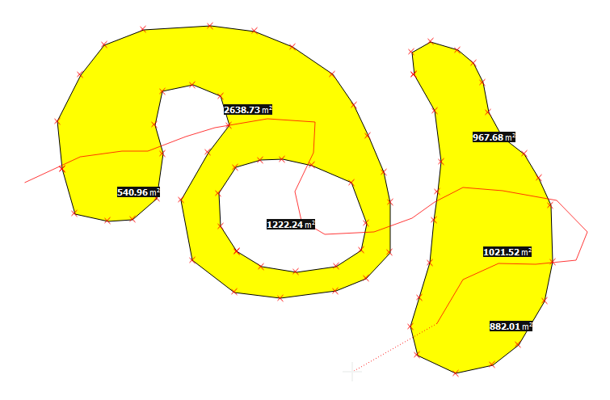

Split Polygon Showing Area
Start editing a
polygon/multipolygon
feature and select the
Split Polygon Showing Area
tool. The tool will show the resulting areas on each side of the cutting line.

Developed by Antonio Carlón